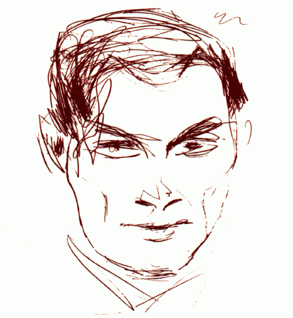

CONFERENCE EVENTS FOR RECOMB 97
CONFERENCE EVENTS
THE STANISLAW ULAM MEMORIAL COMPUTATIONAL BIOLOGY ADDRESS

The Banquet of the Conference will host the Stanislaw Ulam
Memorial Lecture awarded by RECOMB to a scientist who has made major
contributions in the computational aspects of the field.
Dr. Eric Lander (MIT) will be delivering the first Stanislaw
Ulam Address.
THE DISTINGUISHED CONFERENCE LECTURE
The conference will start with the Distinguished Conference Lecture
awarded by RECOMB to a scientist who has made major contributions in the
biological aspects of the field.
Dr. Rich Roberts (New England Biolabs), the 1994 Nobel Laureate
will be delivering the Distinguished Conference Lecture.
THE DISTINGUISHED NEW TECHNOLOGIES LECTURE
A lecture describing emerging, new technologies
will be delivered by Dr. Robert Lipshutz (Affymetrix).
INVITED LECTURES
David Botstein (Stanford)
Sam Karlin (Stanford)
Martin Karplus (Harvard University)
Jonathan King (MIT)
Temple Smith (Boston University)
BEST PAPER BY A YOUNG SCIENTIST AWARD
This award will be given to the best paper
written solely by one or more recent graduates or students.
An abstract is eligible if all
authors are recent graduates (within 2 years from Ph.D.) or
full-time students at the time of submission. This should
be indicated in the submission letter. The program committee may
decline to make the award or may split it among several papers.
Last revision October 15, 1996
scistra@cs.sandia.gov